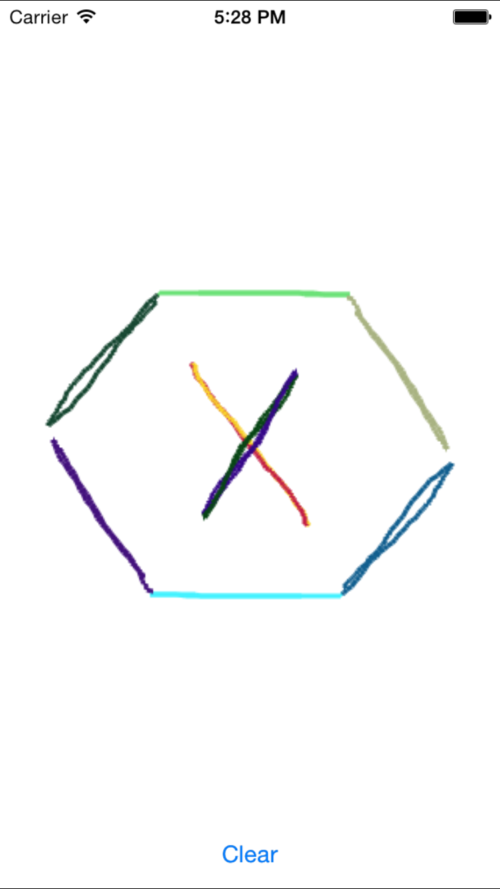

Duration
15 minutes
Goals
The primary goal of this lab is to create a paint application that responds to multiple fingers simultaneously.
Required assets
There is a start solution in in the Exercise 2 folder. Additionally, there is a completed solution which you can use to compare your work.
Challenge
This is an individual exercise, intended for you to complete on it on your own during class; take advantage of the live instructor and ask questions. Here are the high-level steps we will be working through:
- Open the Start solution
- Enable multi-touch on the View Controller's View
- Add a
DictionaryofUIColorobjects using anIntPtras the key named colors. - Override
TouchesBeganand save a unique color for eachUITouch. - Override
TouchesMovedand use the saved color to draw a line. - Override
TouchesEndedand remove theUIColorfrom the dictionary.
Steps
Below are the step-by-step instructions to complete the exercise.
Open the Start Solution
- Open the start solution in the Exercise 2 folder.
- Run the application, you should see a Clear button.
Enable multi-touch on the View Controller
- Open main.storyboard.
- Select the View Controller's View (not the Image View).
- In the properties pane, check Multiple Touch.
Add class level variables
We're going to add a dictionary to track unique colors for each finger in contact with the screen.
We'll use the UITouch object's Handle as the key.
- Add a class level dictionary named colors the holds
UIColors using anIntPtras the key.
Respond to Touches Began Events
- Override
TouchesBegan. - Loop across all
UITouchobjects stored in theNSSettouches parameter. - Generate a random color using the provided GetRandomColor method.
- Save the new color in the colors dictionary.
Respond to Touches Moved Events
We'll draws lines as the user moves their fingers on screen.
The drawing code has been provided in the DrawLine method.
This method accepts two PointFs and a UIColor; which it uses to draw a single line.
- Override
OnTouchesMoved. - Loop across all
UITouchobjects stored in theNSSettouches parameter. - Retrieve the color from the colors dictionary for each
UITouch. - Use the
PreviousLocationInViewandLocationInViewmethods to retrieve the previous and current touch locations. - Pass in the locations and the color for each
UITouchto the DrawLine method.
Respond to Touches Ended Events
When a finger lifts from the screen, we need to remove the UIColor from our colors dictionary.
- Loop across all
UITouchobjects stored in theNSSettouches parameter. - Remove the color for the
UITouchfrom the colors dictionary. - Run the application and draw!
Summary
In this exercise you used your knowledge of multi-touch events in iOS to create a drawing application.